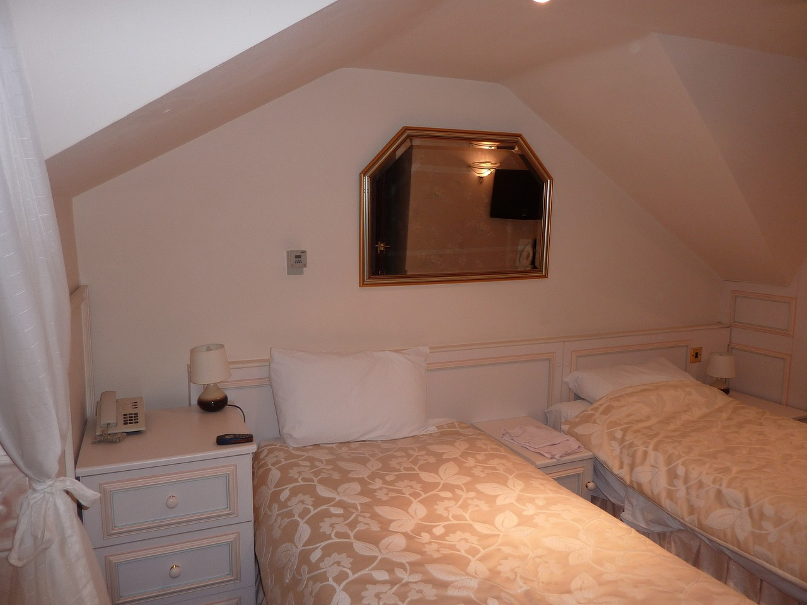

Looking for a new form of entertainment?
Watch those who don't know they're being watched
Our team is composed of people who travel 365 days of the year. In our travels we search for locations that would work for Time Sharing.
First we book a stay to test the location, pinpointing camera setup, backups, and other security measures. Another team member follows
up to install equipment and connects it to Time Sharing’s network of live watch properties.
Each connected property has a number of
cameras that give a glimpse into what strangers do on vacation. You’d probably be surprised what people get up to when they
think no one is watching.

As more and more people become afraid to stay inside rental properties on vacation we are ever growing our presence in hotels.
As I bet you could imagine a penthouse suite is ripe for juicy content. Most people have only really seen what it’s like to be
filthy rich on TV and cinema, but our raw footage gives you a direct lens into that life and the antics which unfold behind closed doors.
Locations bounce all over the place in terms of clientele, from rich to poor, plenty of countries have coverage so far.
We think there’s something for everyone in our large list of connected properties and after buying a subscription package you have free choice to
select those that match your wants.
Additionally we remove our equipment from locations after a certain duration has lapsed to prevent unnecessary risk. It should also be noted that each video feed is monitored 24/7 with a delay. We censor any video/audio that contains information about the location or guests to protect ourselves. This practice will never change no matter the circumstance.